grpreg.RdFit regularization paths for models with grouped penalties over a grid of values for the regularization parameter lambda. Fits linear and logistic regression models.
grpreg(X, y, group=1:ncol(X), penalty=c("grLasso", "grMCP", "grSCAD", "gel", "cMCP"), family=c("gaussian", "binomial", "poisson"), nlambda=100, lambda, lambda.min={if (nrow(X) > ncol(X)) 1e-4 else .05}, log.lambda = TRUE, alpha=1, eps=1e-4, max.iter=10000, dfmax=p, gmax=length(unique(group)), gamma=ifelse(penalty == "grSCAD", 4, 3), tau = 1/3, group.multiplier, warn=TRUE, returnX = FALSE, ...)
| X | The design matrix, without an intercept. |
|---|---|
| y | The response vector, or a matrix in the case of multitask learning (see details). |
| group | A vector describing the grouping of the coefficients.
For greatest efficiency and least ambiguity (see details), it is
best if |
| penalty | The penalty to be applied to the model. For group
selection, one of |
| family | Either "gaussian" or "binomial", depending on the response. |
| nlambda | The number of |
| lambda | A user supplied sequence of |
| lambda.min | The smallest value for |
| log.lambda | Whether compute the grid values of lambda on log scale (default) or linear scale. |
| alpha |
|
| eps | Convergence threshhold. The algorithm iterates until the
RMSD for the change in linear predictors for each coefficient is
less than |
| max.iter | Maximum number of iterations (total across entire path). Default is 10000. See details. |
| dfmax | Limit on the number of parameters allowed to be nonzero. If this limit is exceeded, the algorithm will exit early from the regularization path. |
| gmax | Limit on the number of groups allowed to have nonzero elements. If this limit is exceeded, the algorithm will exit early from the regularization path. |
| gamma | Tuning parameter of the group or composite MCP/SCAD penalty (see details). Default is 3 for MCP and 4 for SCAD. |
| tau | Tuning parameter for the group exponential lasso; defaults to 1/3. |
| group.multiplier | A vector of values representing multiplicative factors by which each group's penalty is to be multiplied. Often, this is a function (such as the square root) of the number of predictors in each group. The default is to use the square root of group size for the group selection methods, and a vector of 1's (i.e., no adjustment for group size) for bi-level selection. |
| warn | Should the function give a warning if it fails to converge? Default is TRUE. See details. |
| returnX | Return the standardized design matrix (and associated group structure information)? Default is FALSE. |
| ... | Arguments passed to other functions (such as gBridge). |
There are two general classes of methods involving grouped penalties:
those that carry out bi-level selection and those that carry out group
selection. Bi-level means carrying out variable selection at the
group level as well as the level of individual covariates (i.e.,
selecting important groups as well as important members of those
groups). Group selection selects important groups, and not members
within the group -- i.e., within a group, coefficients will either all
be zero or all nonzero. The grLasso, grMCP, and
grSCAD penalties carry out group selection, while the
gel and cMCP penalties carry out bi-level selection.
For bi-level selection, see also the gBridge function.
For historical reasons and backwards compatibility, some of these
penalties have aliases; e.g., gLasso will do the same thing as
grLasso, but users are encouraged to use grLasso.
Please note the distinction between grMCP and cMCP. The
former involves an MCP penalty being applied to an L2-norm of each
group. The latter involves a hierarchical penalty which places an
outer MCP penalty on a sum of inner MCP penalties for each group, as
proposed in Breheny & Huang, 2009. Either penalty may be referred to
as the "group MCP", depending on the publication. To resolve this
confusion, Huang et al. (2012) proposed the name "composite MCP" for
the cMCP penalty.
For more information about the penalties and their properties, please
consult the references below, many of which contain discussion, case
studies, and simulation studies comparing the methods. If you use
grpreg for an analysis, please cite the appropriate reference.
In keeping with the notation from the original MCP paper, the tuning
parameter of the MCP penalty is denoted 'gamma'. Note, however, that
in Breheny and Huang (2009), gamma is denoted 'a'.
The objective function for grpreg optimization is defined to be
$$Q(\beta|X, y) = \frac{1}{n} L(\beta|X, y) +
P_\lambda(\beta)$$
where the loss function L is the deviance (-2 times the log
likelihood) for the specified outcome distribution
(gaussian/binomial/poisson).
See
here for more details.
For the bi-level selection methods, a locally approximated coordinate descent algorithm is employed. For the group selection methods, group descent algorithms are employed.
The algorithms employed by grpreg are stable and generally
converge quite rapidly to values close to the solution. However,
especially when p is large compared with n, grpreg may fail to
converge at low values of lambda, where models are
nonidentifiable or nearly singular. Often, this is not the region of
the coefficient path that is most interesting. The default behavior
warning the user when convergence criteria are not met may be
distracting in these cases, and can be modified with warn
(convergence can always be checked later by inspecting the value of
iter).
If models are not converging, increasing max.iter may not be
the most efficient way to correct this problem. Consider increasing
n.lambda or lambda.min in addition to increasing
max.iter.
Although grpreg allows groups to be unordered and given
arbitary names, it is recommended that you specify groups as
consecutive integers. The first reason is efficiency: if groups are
out of order, X must be reordered prior to fitting, then this
process reversed to return coefficients according to the original
order of X. This is inefficient if X is very large.
The second reason is ambiguity with respect to other arguments such as
group.multiplier. With consecutive integers, group=3
unambiguously denotes the third element of group.multiplier.
Seemingly unrelated regressions/multitask learning can be carried out
using grpreg by passing a matrix to y. In this case,
X will be used in separate regressions for each column of
y, with the coefficients grouped across the responses. In
other words, each column of X will form a group with m
members, where m is the number of columns of y. For multiple
Gaussian responses, it is recommended to standardize the columns of
y prior to fitting, in order to apply the penalization equally
across columns.
grpreg requires groups to be non-overlapping.
An object with S3 class "grpreg" containing:
The fitted matrix of coefficients. The number of rows
is equal to the number of coefficients, and the number of columns
is equal to nlambda.
Same as above.
Same as above.
The sequence of lambda values in the path.
Same as above.
A vector containing either the residual sum of squares
("gaussian") or negative log-likelihood ("binomial")
of the fitted model at each value of lambda.
Number of observations.
Same as above.
A vector of length nlambda containing estimates of
effective number of model parameters all the points along the
regularization path. For details on how this is calculated, see
Breheny and Huang (2009).
A vector of length nlambda containing the number
of iterations until convergence at each value of lambda.
A named vector containing the multiplicative constant applied to each group's penalty.
Breheny, P. and Huang, J. (2009) Penalized methods for bi-level variable selection. Statistics and its interface, 2: 369-380. http://myweb.uiowa.edu/pbreheny/pdf/Breheny2009.pdf
Huang J., Breheny, P. and Ma, S. (2012). A selective review of group selection in high dimensional models. Statistical Science, 27: 481-499. http://myweb.uiowa.edu/pbreheny/pdf/Huang2012.pdf
Breheny, P. and Huang, J. (2015) Group descent algorithms for nonconvex penalized linear and logistic regression models with grouped predictors. Statistics and Computing, 25: 173-187. http://dx.doi.org/10.1007/s11222-013-9424-2
Breheny, P. (2015) The group exponential lasso for bi-level variable selection. Biometrics, 71: 731-740. http://dx.doi.org/10.1111/biom.12300
# Birthweight data data(Birthwt) X <- Birthwt$X group <- Birthwt$group # Linear regression y <- Birthwt$bwt fit <- grpreg(X, y, group, penalty="grLasso") plot(fit)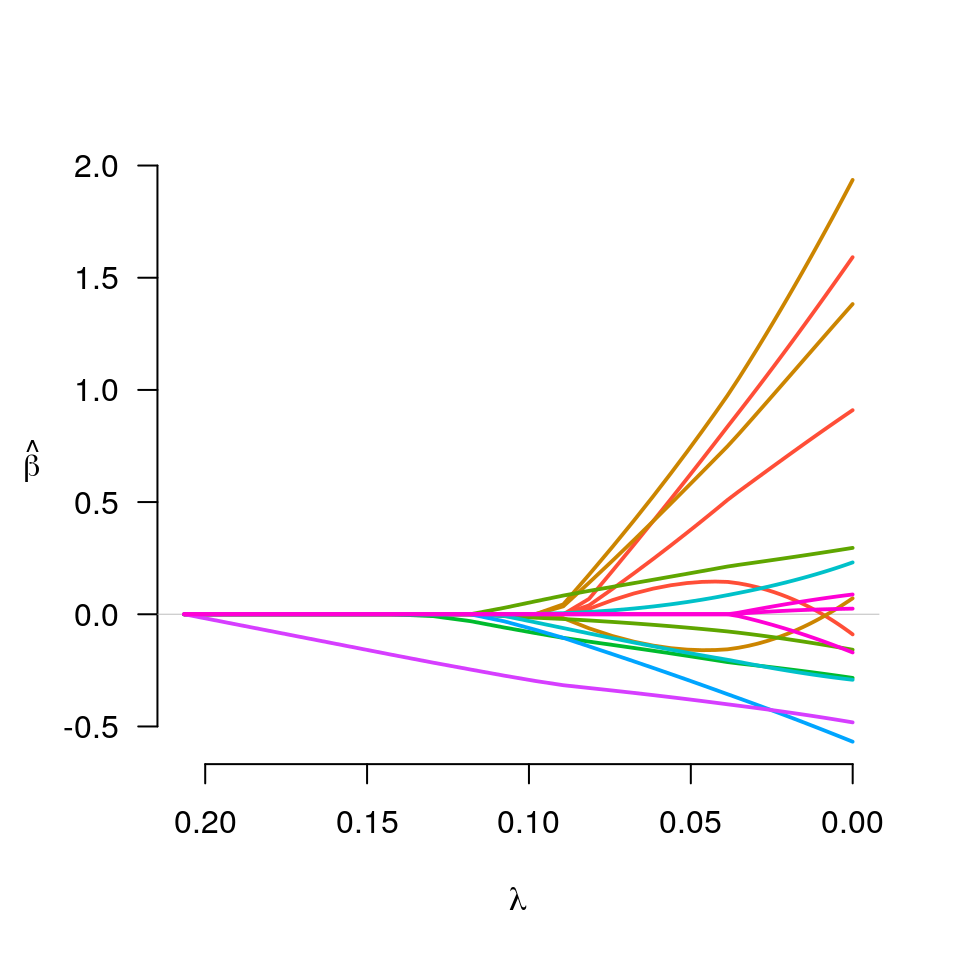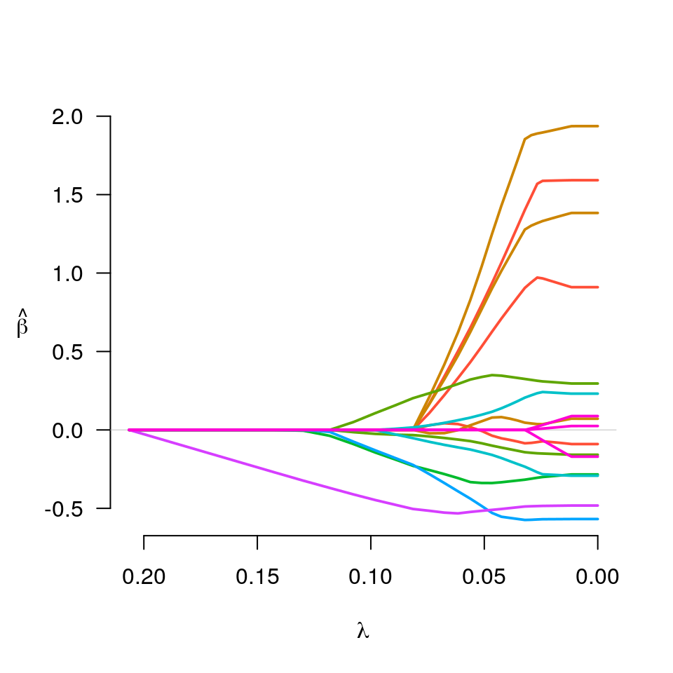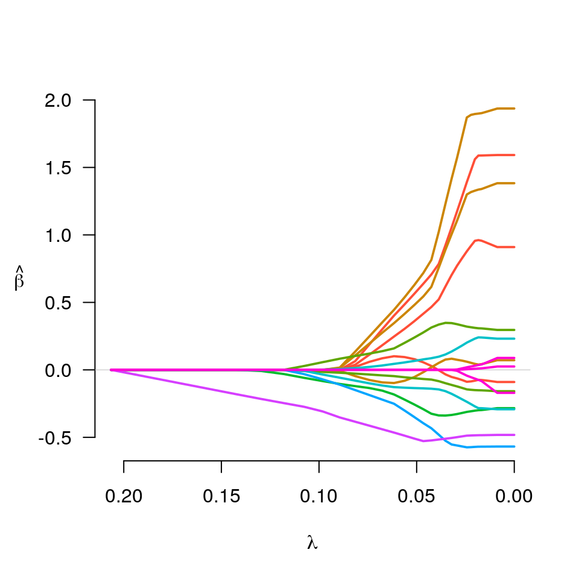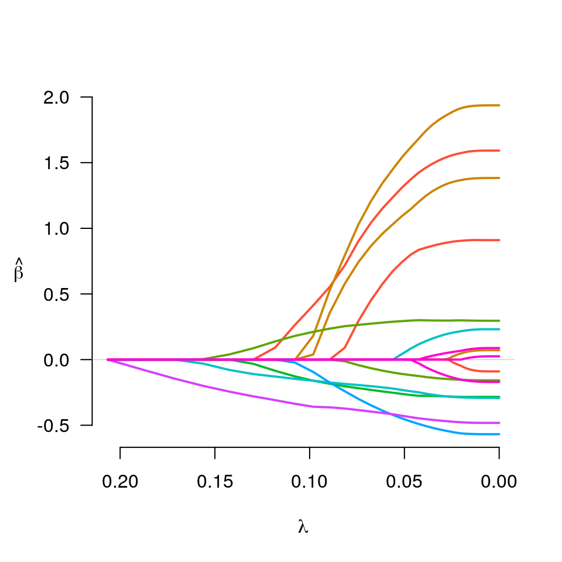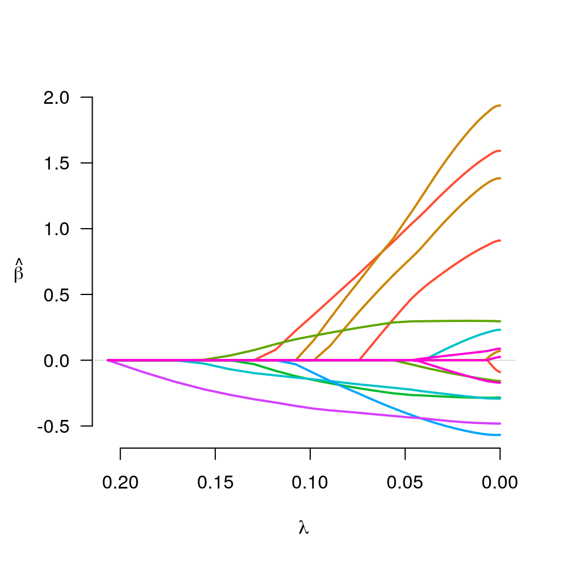#> $beta #> (Intercept) age1 age2 age3 lwt1 lwt2 #> 3.03000773 0.00000000 1.14484129 0.57059454 1.30067773 0.00000000 #> lwt3 white black smoke ptl1 ptl2m #> 0.90025980 0.29687103 -0.05940071 -0.26940924 -0.23983487 0.01075293 #> ht ui ftv1 ftv2 ftv3m #> -0.45620940 -0.44477459 0.01632410 0.00000000 -0.02590741 #> #> $lambda #> [1] 0.03869348 #> #> $df #> [1] 9.805114 #> #> $IC #> [1] 419.9884 415.9171 413.0551 410.1149 405.8256 401.0234 395.6942 390.8250 #> [9] 385.9994 381.6926 378.2296 375.6049 373.2817 371.5483 370.2815 369.4147 #> [17] 368.8327 368.4968 368.3677 368.4282 368.5912 368.8236 369.1017 369.4053 #> [25] 369.7208 370.0378 370.3488 370.6482 370.9327 371.1999 371.4486 371.6783 #> [33] 371.8892 372.0816 372.2563 372.4144 372.7731 373.3927 374.3380 375.1275 #> [41] 375.7750 376.3135 376.7658 377.1486 377.4743 377.7527 377.9913 378.1963 #> [49] 378.3725 378.5237 378.6542 378.7677 378.8665 378.9522 379.0265 379.0914 #> [57] 379.1481 379.1975 379.2410 379.2792 379.3131 379.3429 379.3690 379.3920 #> [65] 379.4122 379.4298 379.4451 379.4586 379.4705 379.4810 379.4903 379.4984 #> [73] 379.4869 379.4947 379.5017 379.5078 379.5132 379.5180 379.5222 379.5261 #> [81] 379.5295 379.5326 379.5354 379.5379 379.5402 379.5422 379.5440 379.5457 #> [89] 379.5471 379.5484 379.5496 379.5506 379.5515 379.5523 379.5530 379.5537 #> [97] 379.5542 379.5547 379.5551 379.5555 #># Logistic regression y <- Birthwt$low fit <- grpreg(X, y, group, penalty="grLasso", family="binomial") plot(fit)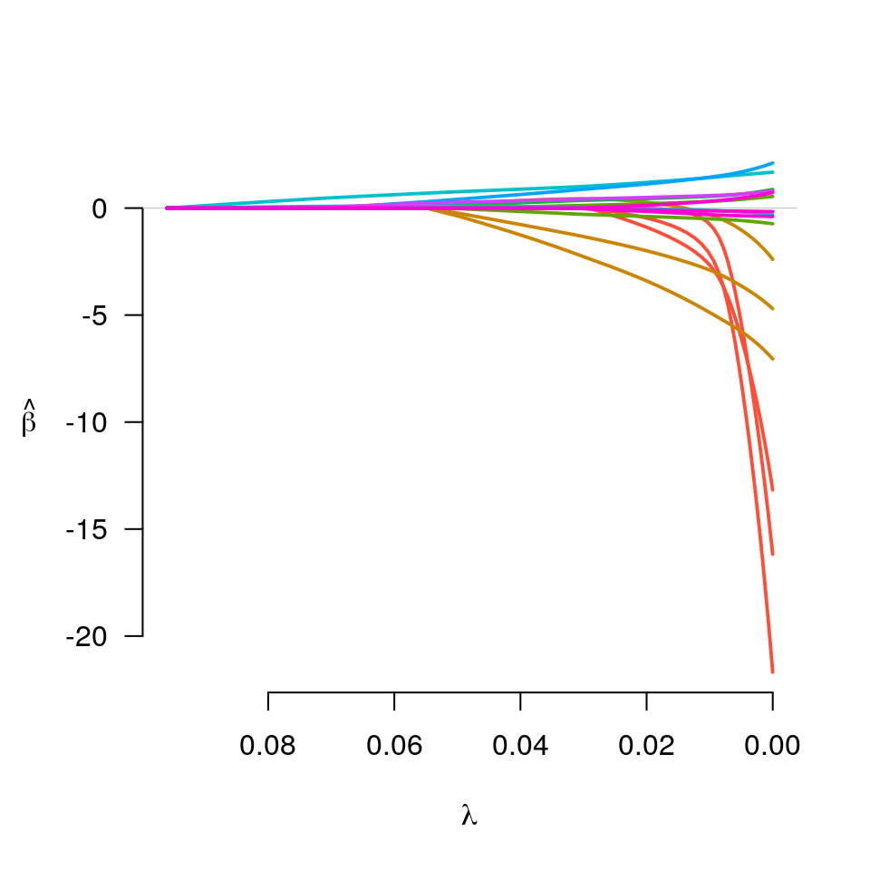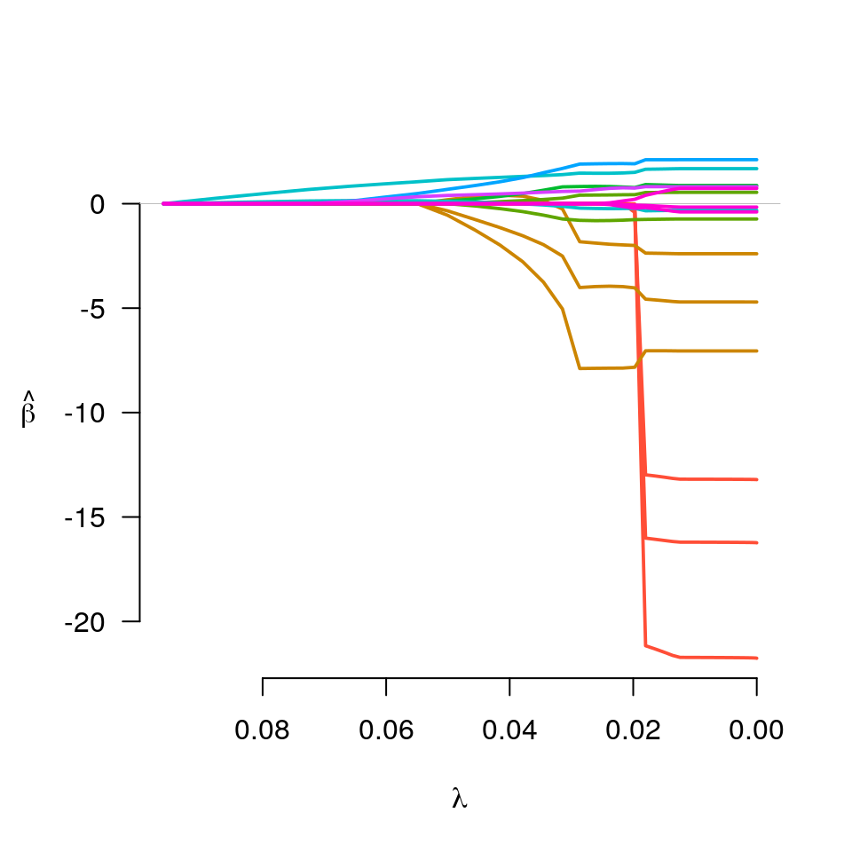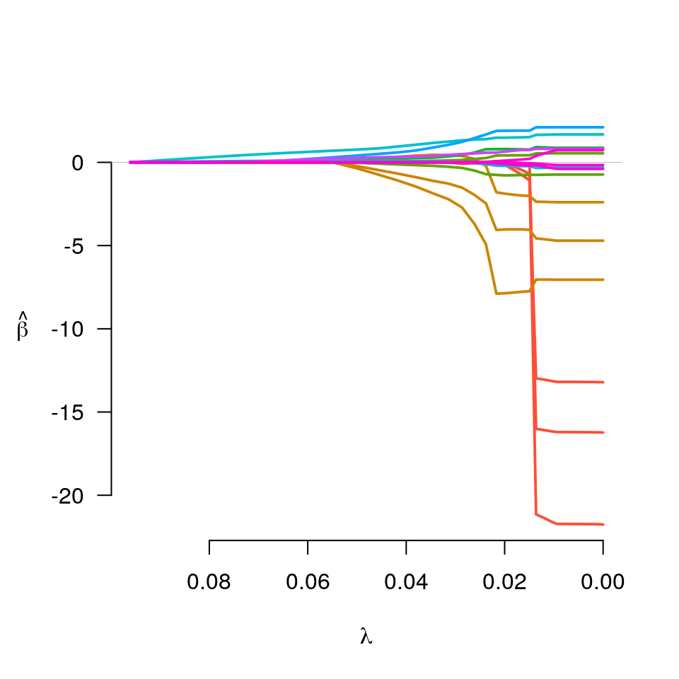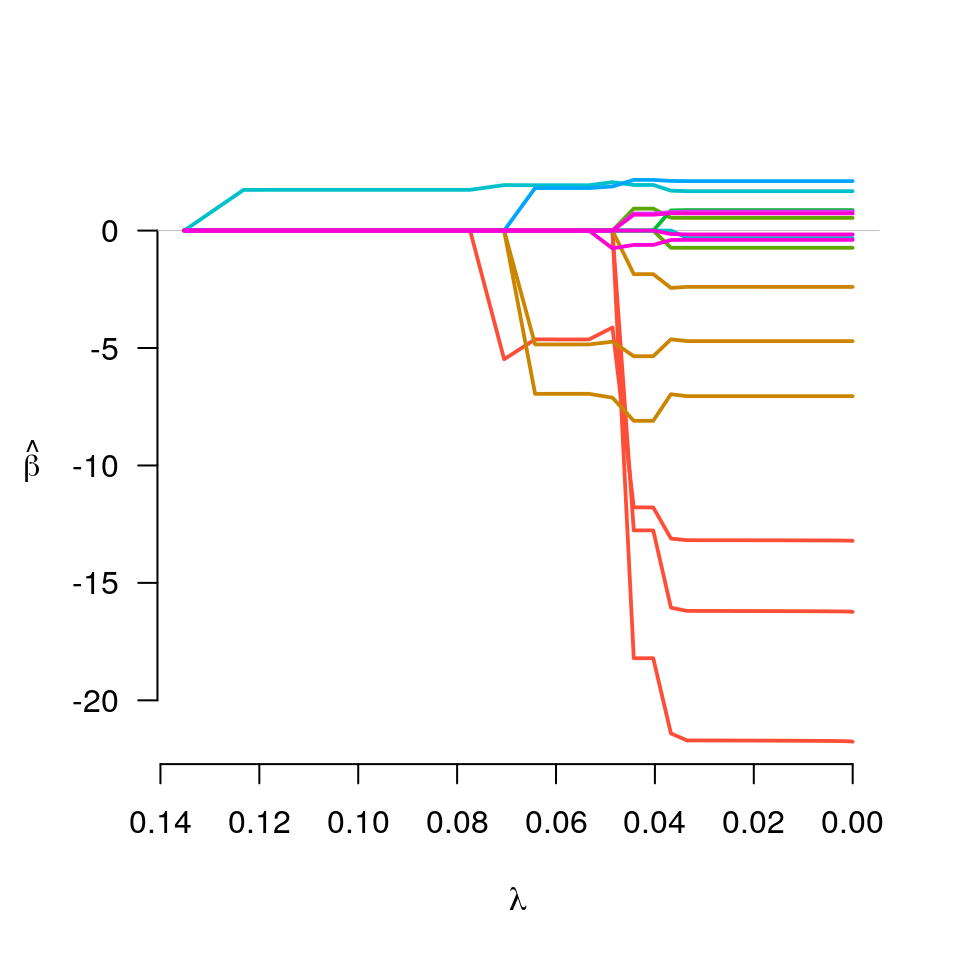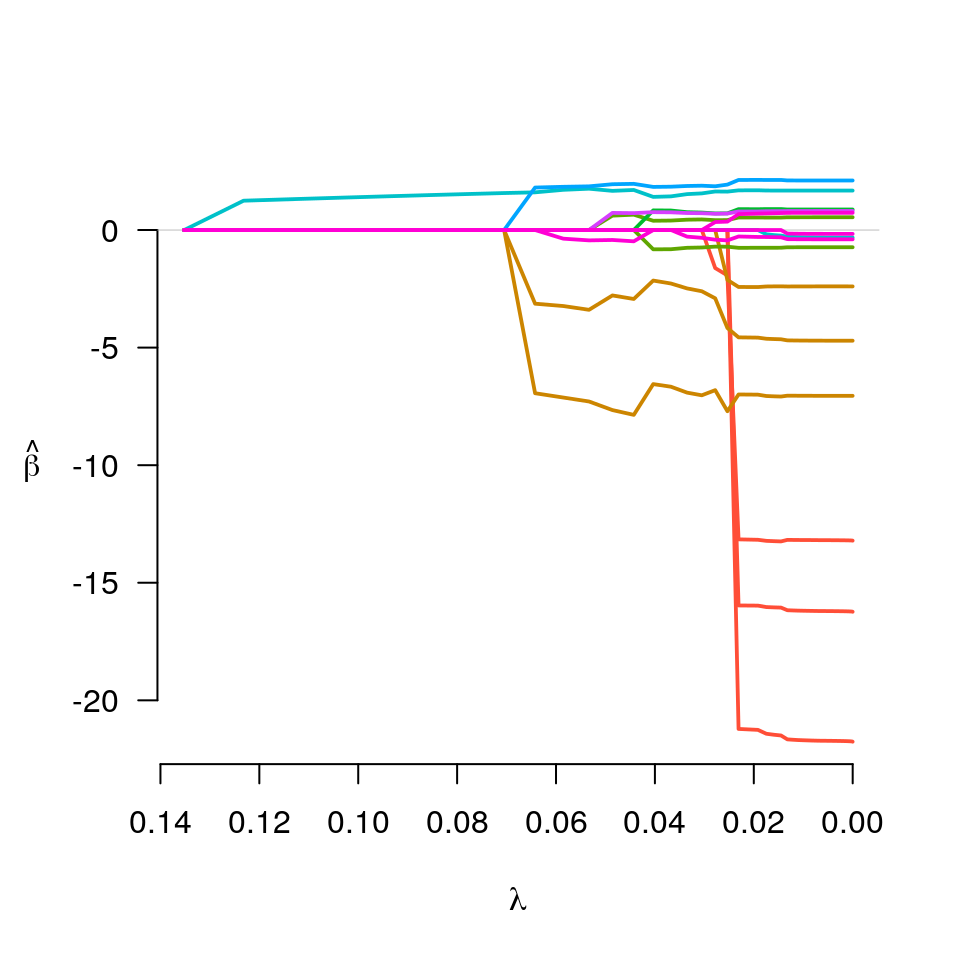#> $beta #> (Intercept) age1 age2 age3 lwt1 lwt2 #> -1.194072 0.000000 0.000000 0.000000 -6.940487 0.000000 #> lwt3 white black smoke ptl1 ptl2m #> -3.133163 0.000000 0.000000 0.000000 1.602972 0.000000 #> ht ui ftv1 ftv2 ftv3m #> 1.806523 0.000000 0.000000 0.000000 0.000000 #> #> $lambda #> [1] 0.06423099 #> #> $df #> [1] 4.670807 #> #> $IC #> [1] 234.6720 230.0990 230.0000 229.9536 229.9441 229.9598 229.9920 230.0346 #> [9] 229.2504 229.6901 229.9650 234.2584 234.6746 239.7532 239.9728 242.3188 #> [17] 242.7281 249.3212 255.2388 261.5262 261.6906 261.8543 265.4466 266.0958 #> [25] 266.5227 272.5203 272.7270 272.8737 272.9777 273.0514 273.1027 273.1361 #> [33] 273.1565 273.1643 273.1700 273.1707 273.1707 273.1707 273.1707 273.1707 #> [41] 273.1707 273.1707 273.1707 273.1707 273.1707 273.1707 273.1707 273.1707 #> [49] 273.1707 273.1707 273.1707 273.1707 273.1707 273.1707 273.1707 273.1707 #> [57] 273.1707 273.1707 273.1707 273.1707 273.1707 273.1707 273.1707 273.1707 #> [65] 273.1707 273.1707 273.1707 273.1707 273.1707 273.1707 273.1707 273.1707 #> [73] 273.1707 273.1707 273.1707 273.1707 273.1707 273.1707 273.1707 273.1707 #> [81] 273.1707 273.1707 273.1707 273.1707 273.1707 273.1707 273.1707 273.1707 #> [89] 273.1707 273.1707 273.1707 273.1707 273.1707 273.1707 273.1707 273.1707 #> [97] 273.1707 273.1707 273.1707 273.1707 #># Multitask learning (simulated example) set.seed(1) n <- 50 p <- 10 k <- 5 X <- matrix(runif(n*p), n, p) y <- matrix(rnorm(n*k, X[,1] + X[,2]), n, k) fit <- grpreg(X, y) # Note that group is set up automatically fit$group#> [1] 5 6 7 8 9 10 #> Levels: 5 6 7 8 9 10plot(fit)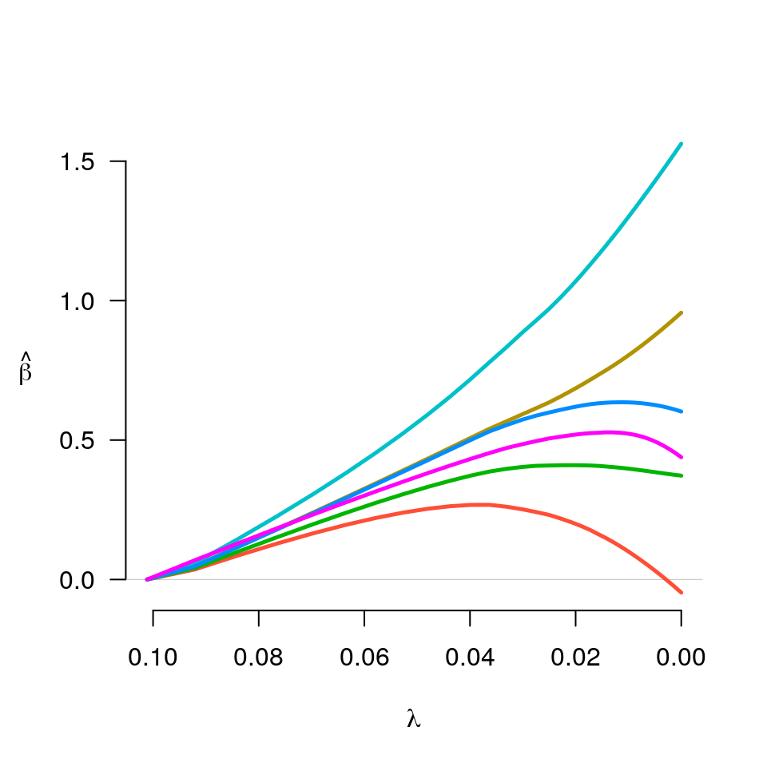